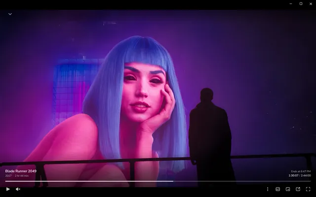

Every file, as it is.
mpv plays inside Mira on Windows and Mac, with the right audio and subtitles from the first episode. Your server converts only when it has to.
Mira is a free client for Windows, Mac and iPhone. Every film you own, played as it is, resumed where you stopped, watched with a friend from a link.
Watch the tour 1:20
mpv plays inside Mira on Windows and Mac, with the right audio and subtitles from the first episode. Your server converts only when it has to.
Send your party link. A friend gives a first name and watches with you, without an account on your server.
No Mira account, no analytics, no ads. Settings list every connection Mira makes, and how to stop each one.


Windows 10 or 11, x64
Apple silicon, macOS 15 or later
brew install --cask sasou-web/mira/miraGuideDisk image
iOS 26 or later, with AltStore
miracinema.app/altstore.jsonInstall with AltStore
Windows files aren’t signed yet: SmartScreen may ask you to confirm. SHA-256 checksums are in each release.